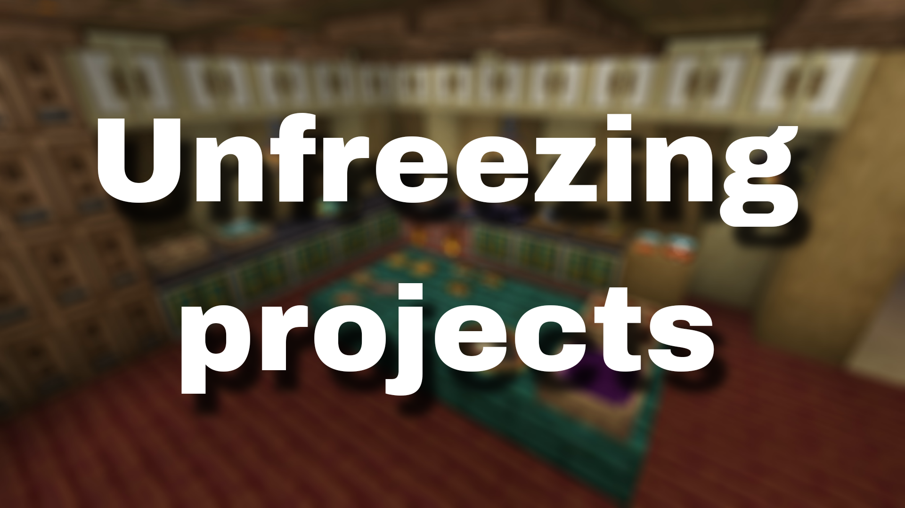

<!DOCTYPE html>
<html lang="en">
<head>
  <link rel="icon" href="../img/themes/active/favicon.png">
  <title>Unfreezing projects | Blog | Donne431</title>
  <meta name="viewport" content="width=device-width, initial-scale=1, maximum-scale=1" />
  <meta name="title" content="Unfreezing projects | Blog | Donne431">
  <meta name="description" content="Welcome to my website! I am Donne431, just a guy, who love made a modifications for games. I'm 16 years old, and I'm from Crimea, Russia (demi-island washed by the Black and Azov Sea). I also like to create almost any content for Minecraft, that is: mods, maps, resource packs, servers.">
  <meta name="keywords" content="Minecraft, Forts, Mods, Resourcepacks, Datapacks, Donne431">
  <meta name="theme-color" content="#4bb4f1">


  <script src="https://code.jquery.com/jquery-3.3.1.min.js"></script>
  <script src="https://cdn.jsdelivr.net/npm/handlebars@latest/dist/handlebars.js"></script>
  <script src="https://mcapi.us/scripts/minecraft.min.js"></script>
  <script src="../js/main.js"></script>
  <script src="../config.js"></script>
  <script src="../js/lightbox.min.js"></script>

  <script>tosAgreed = true</script>

  <link rel="stylesheet" href="https://cdnjs.cloudflare.com/ajax/libs/font-awesome/6.7.1/css/all.min.css"/>
  <link rel="stylesheet" href="../css/style.css">
  <link rel="stylesheet" href="../config.css">
  <link href="../css/lightbox.css" rel="stylesheet" media="all">

</head>


<body>

  <div id="target"></div>

  <script id="template" type="text/x-handlebars-template">

  <header>
    <div class="hero" id="hero">
      <a href="#!"><h1 style="padding-top: 3%;"></h1></a>
    <p> </p>
    <div class="news-card" align="center">
      <a href="../" class="btn"><i class="fa-solid fa-house"></i> Home</a>
      <a href="../blog" class="btn"><i class="fa-solid fa-newspaper"></i> Blog</a>
      <a href="#links" class="btn"><i class="fa-solid fa-share"></i> Links</a>
    </div>
    <p> </p>
    </div>
  </header>

  <section class="dark" id="blog">
    <h1><i class="fa-solid fa-newspaper"></i> Blog</h1>
    <div id="news">
    <div class="news-card" align="center">
    <a>MISC</a><br>
    <a href="../img/blog/unfreezing-projects/preview.png" data-lightbox="roadtrip"></a>
    <h1 align="center">Unfreezing projects</h1>
    <i>28.02.2024, 16:00</i><br>
    </div>
    <p>
    Hello to all the readers of this post!<br><br>

    I'm feeling much better, so I decided to unfreeze some of my projects, among them: the website (where you are sitting right now) and Ice and Fire Delight. Btw, about IaFD, I have recently continued to develop updates for this mod and already most likely when you are reading this blog, the new update - 0.2.2 has been released. The next update - 0.2.3, promises to be pretty big, so don't forget to check the spoilers page on <a href="/projects/ice_and_fire_delight/spoilers.html" style="color:rgb(66, 229, 66)">this tab</a>! Also 0.2.3 will most likely be in development for about a month, if not more, so I hope you don't forget about the mod! <br> <br>
    As for the other projects, Create: Lights up is frozen for an unspecified period, I will try to make it and release it, but not sure if it will happen soon.

   <!--
    Привет всем читателям этого поста!

    Мне стало в разы лучше, поэтому я решил разморозить часть своих проектов, среди них: сайт(на котором вы прямо сейчас сидите) и Ice and Fire Delight. Кстати, насчёт IaFD, недавно я продолжил разработку обновлений для этого мода и уже скорее всего, когда вы читаете данный блог, новое обновление - 0.2.2 было выпущено. Следующее обновление - 0.2.3, обещает быть довольно крупным, поэтому не забывайте проверять страницу спойлеров на <a href="/projects/ice_and_fire_delight/spoilers.html" style="color:rgb(66, 229, 66)">этой вкладке</a>! Также скорее всего, 0.2.3 будет разрабатываться около месяца, если не больше, поэтому надеюсь вы не забудете про мод! <br>
    Насчёт других проектов пока скажу так, Create: Lights up заморожен на не определённый период, я постараюсь его сделать и выпустить, но не факт, что это случиться скоро.
   -->
    </p>
    <p align="center"><i class="fa-solid fa-user"></i> Donne431 (Author)</p>
    </div>
  </section>
  <section class="dark">
    <div class="news-card" align="center">
    <a href="../blog/freezing-all-projects.html" class="btn2"><i class="fa-solid fa-arrow-left"></i> Previous post</a>
    <a href="../blog" class="btn2"><i class="fa-solid fa-newspaper"></i> Back to Blog</a>
    <a href="../blog/iafd-50k.html" class="btn2"><i class="fa-solid fa-arrow-right"></i> Next post</a>
    </div>
  </section>

  <section class="light">
    <h1><i class="fa-solid fa-share"></i> Links</h1>
    <div id="links" align="center">
      <a href="https://discord.gg/NQBhQRDEhF"></a>
      <a href="https://www.curseforge.com/members/donne431/projects"></a>
      <a href="https://modrinth.com/user/Donne431"></a>
      <a href="https://github.com/Donne431"></a>
      <a href="https://www.donationalerts.com/r/donne431"></a>
    </div>
  </section>

  <footer>
    <a>&copy; {{server_port}} {{server_name}}. All Rights Reserved.</br>{{server_name}} is not affiliated with or endorsed by Mojang Studios or Microsoft<br>{{server_ip}}</a>
    <a></a>
    
  </footer>
  </script>
  <script src="../js/license.js"></script>

</body>
</html>
